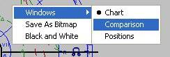
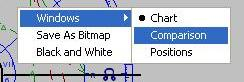

Morinus egy könnyen használható asztrológia szoftver, GPLv3 licensszel. A svájci efemeridát használja, tehát nagyon pontos (Kr.e.5000 - Kr.u.5000). Minden olyan Operációs rendszeren fut, ahol a Python és a wxPython elérhető(Linux, Windows, MacOS).
Az opciók-menüben beállítható a:
A horoszkópok és az opciók elmenthetőek és visszatölthetőek és jobb-klikkel bármelyik ablakon(kivéve a radixét, mert annak van saját menüje) egy előugró menüt kapunk. A Primer Direkciók szöveg-fájlba is menthető.
 

Csak az aktív elemeket(radiobuttons, checkboxes) számolja a program. (Pl.: ha csak a Terminusokat akarjuk látni, akkor válasszuk ki a "Zodiakális"-radiobutton-t, majd válasszuk ki csak a Terminusokat a Promisszorok oszlopban, nyomjunk OK-t majd F12-t) A közbeeső házcsúcsok a kiválasztott PD-nek megfelelően lesznek számítva(pl.: Regiomontanus házcsúcsok Regiomontanus PD-k esetén). Jelenleg a PDk a közbeeső házcsúcsokhoz megegyeznek a Placidus(sarkmagasságalatt) és a Placidus(semiarcus) esetében. A Regiomontanus/Campanus-PD legyen kiválasztva az Opciók/PD-Dialógus-ban hogy Regiomontanus-speculumot kapjunk a Pozíció-tablázatban. Az Opciók/Terminusok dialógusablakban kiválasztott Terminust használja a program a PDk-ben. A Placidus(sarkmagasságalatt) csak egy approximáció a Placidus(semiarcus)-hoz. PDk az Asc, MC-hez megegyeznek mindegyik rendszerben(Placidus, Regiomontanus, ...). Mundán PDkben az aspektusokat nem az Ekliptikán, hanem a házakban számítjuk. Csak a felezőpontok, a mundán aspektuális direkciók(a conjunctio-n és az oppozicio-n kívül) és a direkciók házcsúcsokhoz különböznek a Regiomontanus és a Campanus PDk esetén. A program nem tudja J-B Morin aspektus korrekcióját(Regiomontanus PDk). Bianchini különböző szélességeket rendelt(a promisszor szélességéből számítva) az aspektusokhoz(conjunctio:promisszorszélessége, sextil:promisszorszélessége/2, quadrat:0, trigon:-promisszorszélessége/2, oppositio:-promisszorszélessége) és mindíg használta a szignifikátor szélességét is. Ha a "Topocentrikus" ki lett választva a Megjelenítés I dialógusban, akkor a topocentrikus pozíciókat hasznalja a program a PDk esetében. Ha a "Szek. Mozgás"(szekunder mozgás, valós idejű Hold) ki lett választva, akkor a Hold PD-i korrigálva lesznek. Ha a "Felhasználói" ki van jelölve, akkor az Ekliptikai koordináták által megadott pontot fogja a program a kiválasztott szignifikátorokhoz dirigálni. Például 16Bak 25perc 46mp esetén: 286-ot kell beírni a Hosszúság Fok-mezőjébe. A program "Felhasználói"-t fog mutatni a PD-listákban. Ha a "Felhasználói2" ki van jelölve, akkor az Ekliptikai koordináták által megadott ponthoz fogja a program a kiválasztott promisszorokat dirigálni. Például 16Bak 25perc 46mp esetén: 286-ot kell beírni a Hosszúság Fok-mezőjébe. A program "Felhasználói2"-t fog mutatni a PD-listákban. Ha csak a Felhasználói-pont van kiválasztva a Primer Direkciók dialógusban akkor a Felhasználói-pont speculum-ját fogja a Felh. Speculum mutatni. Ha csak a Felhasználói2-pont van kiválasztva a Primer Direkciók dialógusban akkor a Felhasználói2-pont speculum-ját fogja a Felh. Speculum mutatni. Ha mind a Felhasználói-pont és a Felhsználói2-pont ki van választva a Primer Direkciók dialógusban akkor a Felhasználói-pont speculum-ját fogja a Felh. Speculum mutatni. Az ayanamsha csak a Terminusokra van hatással a PDk-ben, tehát pl. a "Felhasználói" vagy a "Felhasználói2"-pontra sem. A program előnyben részesíti az Asc, MC-t a Desc,IC-vel szemben. Ez azt jelenti, hogy ha "Hold --> DESC" hiányzik, akkor válasszuk ki az oppozició aspektust és a megfelelő zodiakális opciót: "oppozició Hold --> Asc"-nak kellene megjelennie. A mundán FelezőPontok-at Makransky Rapt-Parallel algorithmusa alapján, a zodiakális(szélességgel) FelezőPontokat Rüdiger Plantiko algorithmusa alapján számolja a program. Az utolsó három oszlop(Megjelenités II) Placidus PDk esetén a Placidus(sarkmagasság)-hoz tartoznak.
Preliminary astronomical remarks Speaking of Zodiacal PDs in Chart and Ingresses (transits on the first ones), according to some generous mails Martin Gansten sent me, as I understood no real method came us from the ancient masters to draw them. Hints only. And as I know, solely in recent times, thanks to computerized procedures, the students had the possibility to deal with them. Under the astronomical viewpoint, in the temporal gap PDs express their effects (400 minutes after the birth to cover 100 years in the real time), changes in the celestial planetary positions (i.e in the signs) are not appreciable: about 25' for Sun and inner planets, very less for the outer celestial bodies. Only the Moon is able to move in zodiac up to about 4°. So, the zodiacal positions drawn for the planets in these charts are reckoned thanks to certain symbolic or pseudo astronomic criterions. Available in its options, Morinus offers three different methods: the first is the most common in use, the second coincides with the first unless the starting planetary positions, the third is a wholly new method. To avoid confusion in the terminology (the same adjectives could be used for the charts and for the planets utilized to cast them) in the options they are labeled "Celestial" instead of "Zodiacal". What follows is the technical viewpoint of the writer and to do involves necessarily other persons' opinion.
First option (from the planets)
M. Gansten quoted me the basic principle of PD as formulated by Ptolemy: "For a place is similar and the
same position in the same direction with reference both to the horizon and to the meridian". So, moving the
celestial sphere, ASC and MC move as usually in zodiac. The planets are kept in their native mundane
positions "to shares the same proportional relationship to the horizon and meridian which they had at the
birth" instead, and thanks to the trigonometric formulas that tie OA/OD to the celestial longitude, their
position in the PDs charts is then reckoned. This is the a first way to satisfy the Ptolemaic indications, but
being this ecliptic projection "mundo referred" it has a disadvantage. For "simple" geometric, trigonometric
and astronomical reasons, the formulas involved are valid for points lying on the ecliptic only, i.e. without
latitude, with the consequence that for small arcs of directions the planets jump suddenly from their native
positions to others quite far, yielding a technique not Radix compatible.
Second option (from their ecliptic feet)
We have a second possibility to satisfy Ptolemy. Keeping the same above method, the native zodiacal
planetary projections can be used as starting point. In such a way the technique is Radix compatible. Starting
from the birth, the planets move smoothly from their native positions in zodiac without jumps due to the
latitude.
The two above variants must be accepted as they are, as symbolic techniques dictated by the wishes of the
tradition. Any effort to frame them in one astronomical context is senseless and fated to fail. We have seen,
for example, that the first is discontinuous at the Radix. On the other end the second does not respect the
basic astronomical principle for which two real celestial objects, with latitude, after an equatorial rotation of
the celestial sphere see their ecliptic feet vary their mutual zodiacal distance.
Under an astronomical, conceptual viewpoint, a further problem joins the two previous methods. We
remember that for both of them, flowing the time, the planetary positions in zodiac are dependent from their
forced, immutable placing in the local space. This enforcement, necessary to respect the tradition, may
generate perplexity to astronomical eyes because the zodiacal positions "are what they are", regardless to
the observing geographical point. In other words, what happens with the two above methods is that for two
horoscopes cast at the same time for two different points on the Earth, the PDs in Chart positions do not
coincide. It is like if two persons, born in the same instant, one in Rome the other at New York, had the Sun
in different positions: the first at 15°Aries, the second at 17°Aries (of course we do not consider here the
negligible parallax consequences).
Third option (full pseudo-astronomic)
So, to satisfy a more plausible astronomical scenery, a third option arose. Starting from the true equatorial
planetary positions, we detect the PDs pseudo-zodiac (the whole ecliptic, "frozen" in the position it had at the
birth) and thanks to a true coordinate system transformation (equatorial to ecliptic) we reckon the zodiacal
positions. Of course, doing so the zodiacal positions of our planets are not related with the mundane, local
positions any longer. It's interesting to note an unusual detail: the intersection axis between such a pseudozodiac
and the equatorial plane, rotates on the last one in the time, with the consequence that the Aries-Libra
Points do not coincide with the Equinoctial Points any more.
Differences between the three methods
Compared to the first, the second technique generally does not imply appreciable differences but for the two
celestial bodies having an high inclination of the orbit (Mercury, with an orbital inclination = 7°, and Pluto, with
an orbital inclination = 17°). The third technique starts from the Radix positions with a DA=0 and moves the
planets roughly in the amount of one/few degrees per year. Therefore the differences with the two previous
methods increase up to several degrees increasing the directional arc. Thanks to the double charts, PDs and
Radix, and to the possibility to open Morinus in multiple instances, the student will be able to compare easily
the three methods, appreciate their differences, note their limits/benefits.
Secondary motion
The *astronomical* (not mathematical) option for the second motion is available. It was possible to limit this
option to the Moon only, but we preferred to extend its effects to all the planets as well. An astronomical
second motion means that the true geocentric astronomical positions are reckoned, without any
compromise. The secondary motion is not involved the first two methods: for this reason this option is active
for the third pseudo-astronomic method, only.
Domification
Just like the Profections charts, thanks to criterions of calculus oriented towards a global astronomical base,
for the three methods the position of the cusps is not limited to the four cardinal points but is available for all
of them (full domification, identical for the three methods).The students accustomed to work only with ASC,
MC, DES and IC may neglect the others cusps. In these charts the positions in the houses have the ordinary
problem related with the latitude. This flaw is everywhere in the astrological flat graphics, is unavoidable
and due to the tridimensional celestial sphere context. The user is informed that casting PD charts with the
third method, sometimes, changing the arc of direction, smoothly and with continuity, the positions in the
houses may change. Accepting the pseudo-astronomic premises, this is completely natural. Note these
terrestrial positions must not be understood as mundane positions related with the diurnal motion the PDs
come from: they alter little over a period of 100 symbolic years while the true mundane ones change widely
and quickly in the 400 minutes after the birth.
User Guide
Options menu:
[Roberto]
Preliminary astronomical remarks
Generally PDs are given in tabled look. When promissor and significator, or their aspects, are in the same
mundane position (with a lot of variants, with or without latitude) the current techniques give the related arc of
direction and, according to the analogical key, the hit date. The question is: it's possible, in such a moment,
to see the full, mundane astronomical context? In other words: it's possible to cast a chart, of course in
graphic mode, with the full set of the planets in daily motion, seen as promissors, versus the radix set of the
planets regarded as significators? Keeping between them the geometrical ratios? The answer is positive.
So, after the Zodiacal PDs in Chart, the Mundane ones have been added. These charts do not show the
zodiacal signs. They show the "local space", instead, i.e. the astrological houses. The reference system is
based on the two main lines of the geographic natal point: ASC-DES and MC-IC. The reference system itself
is normalized in manner to have the two axes in orthogonal position and all the twelve places 30° wide. The
planetary placing is according to the mundane positions, different from the positions the planets have in the
houses in the common zodiacal charts. According to the selected PDs type (Options\Primary direction menu)
the mundane positions could be reckoned in agreement with five different possibilities: Placidus(semiarc),
PlacidusUTP, Regiomontanus, Campanus and Topocentric, but we preferred to limit the choice to the type of
tabled PDs Morinus offers at the moment. To note the pure, full astronomical nature of these charts, the
same true astronomical properties the standard, zodiacal charts have (see the note on the speculum below).
According to the terminology used for the Zodiacal charts (labeled "Celestial"), these charts are named
"Terrestrial". Of course they are cast starting "from the planets", with their latitude, and show in chart the
tabled, traditional Mundane PDs. Note that the double option available for the "Celestial" (From the planets or
From their ecliptic feet) is not possible here, because the traditional Zodiacal PDs framework does not permit
an overall representation correlated with a synthetic (pseudo-astronomical) view.
Option for the secondary motion
This option affects the charts in global mode. In this way the charts are not perfectly compatible with tabled
PDs but, marking the lunar sec. motion in "Options\Primary directions" menu, the differences will be very,
very small. Under (about) 25' with the max. arcs (100°) for Sun and inferior planets. For the superior planets
the difference is very smaller. Terrestrial reckoned without secondary motion would be in full agreement with
the tabled PDs if the lunar sec. motion in "Options\Primary directions" menu is not chosen. A thin question
remains: are these charts a good approximation of the traditional mundane PDs or vice versa? The answer
to the reader :-)
Domification
In Terrestrial double charts (radix and PD), under the astronomical viewpoint only the radix domification has
a meaning. The reason is the axes ASC-DES and MC-IC are steady in the local space. They are the
reference system and can't rotate respect to ... themselves. In the tabled PDs, their use as promissors is
possible applying them the mathematical formulas used for any other celestial object that lies on the
Celestial Sphere. The movement of the cardinal points in the role of promissors, in the Terrestrial charts
should be a mathematical trick: we preferred to avoid this non-astronomical feature.
User Guide
Options menu:
[Roberto]
For each type of chart, generally we have a partner speculum. For the standard zodiacal charts (radix) each
parameter in the speculum is a real astronomical parameter. For other charts the speculum may shows
fictitious parameters. In our opinion this does not authorize to consider one technique better than others
according to the content of the related speculum because, starting from an astronomical context, the
astrology bases its analysis appealing to the analogy and symbolism laws, too. Anyway, even if some more
detail should be important, summarily, for each chart we have:
Radix: True astronomical speculum
Transits: True astronomical speculum
Revolutions: True astronomical speculum
Sec. directions: True astronomical speculum
Elections: True astronomical speculum
Zodiacal Profections: Fictitious speculum. The long. only is moved. Other parameters unchanged
Placidian Profections: Fictitious speculum. The mundane parameters are prescribed. Reckoned the longitude
Mundane: True astronomical speculum
Ter. PDs inCh. with sec.m.: True astronomical speculum
Ter. PDs inCh. without s.m.: Fictitious speculum. The mundane parameters have almost the astronomical values
Cel.PDs inCh.(Ptolemy): Fictitious speculum. The mundane parameters are prescribed. Reckoned the longitude
Cel.PDs inCh.(Pse-Ast): Fictitious speculum. Only the equatorial coordinates have astronomical values
[Roberto]
Jelenleg az Almuten-számítás az Arabok és Ibn Ezra szerint történik. Három fajta Almuten van:
Mind a három almuten az Opciók/Almutenek/Horoszkóp dialógusbeli Esszenciális beállításoknak megfelelően számítódik és az Akcidentális beállításokat is figyelembe veszi a program a Horoszkóp Almuten esetében(ha a "Használd" ki van választva). A Horoszkóp Almuten a bolygók öt hylegális helyen(Nap, Hold, Asc, Szerencsekerék, Syzygy) levő uralma/ereje szerint számítódik. Az "Öszes Ural." a számoknak az oszlopon belüli számából jön(pl.: 3+2 kettőt jelent mert a triplicitás és a terminus két uralmat jelent). Sok asztrológus csak az Esszenciális beállításokat használta a Horoszkóp Almuten számításaikban. A program nem tudja megmondani, hogy melyik bolygó a Horoszkóp Almutenje, mert lehet egy olyan bolygó amelynek csak a második legnagyobb a pontszáma, de egzakt aspektust vet az ascendensre, ekkor ezt a bolygót válasszuk a Horoszkóp Almutenjének. Bármelyik opció kizárható a számításból, ha nullára állítjuk. Amennyire tudom, Ibn Ezra használta az akcidentális beállításokat(kivéve a Nap/Óra urát). Nap-fázisok: csak keleti pozíciók és csak a Mars, Jupiter és Szaturnusz esetében: 18-30 fok a Naptól[Gyenge], 30-40[Közepes], 40-80[Erős], 80-100[Közepes], 100-120[Gyenge]. Robert Zoller használja a Nap/Óra urát. Az Esszenciális beállításokról: ha EgyÚr(Nappal/Éjjel) van kiválasztva, akkor csak egy bolygó kapja meg a triplicitás pontszámot és nappali horoszkóp esetében az első triplicitás úr lesz ez a bolygó, éjjeli esetében a második(tehát az első és a második triplicitás úr felcserélődik éjjeli horoszkóp esetében). A "Haszn. nappal/éjjel orbisz" esetén az Arab Pontok szerkesztőbeli orbiszt használja a program, ha mind az EgyÚr mind a "Haszn. nappal/éjjel orbisz" ki van választva.
Téma Almuten példa Schoener-től, (Anyagi Almuten):
Az Opciók/Almutenek/Téma szerkesztőben készíthetjük el ezt(és más) almutent. Ezekből a hosszúságokból egy táblázatot mutat a program a Táblázatok/Almutenek/Témák menüben. Már létező Téma Almuteneket nem lehet módosítani. Amikor kiválasztunk egy Almutent a combobox(legördülő lista)-ból, a neve és a sorai betoltődnek a szerkesztőbe. A szerkesztőt lehet módosítani(név és sorok(SorHozzáadása, SorEltávolítása, MindentTöröl)), nem lesz hatása a már létező Téma Almutenre. Az új Téma Almutent a Hozzáad gombra klikkelve adhatjuk hozzá. Csak a hét bolygót használja a program az almuten számításokban.
A PDk után a tradicionális asztrológia a profekciókat ajánlja. Három fajta profekció van: évi, havi és napi (az utolsó kettőből több fajta is van). A legfontosabb az évi. A tradicionális évi zodiakális profekciók a radix poziciókat mozgatja évente egy jeggyel. A Placiduszi éves Profekciók teóriáját Giuseppe Bezza (Cielo e Terra iskola, Italy) dolgozta ki. A radix ASC az óramutató járásának megfelelően mozog a térben évente egy placidus-házat. A számitások minden asztronómiai objektumra megtörténnek, az asztonómiai paramétereiknek megfelelően. A követő és hanyatló házakat nem szokták használni. Az égi szféra teljes ferde forgásának köszönhetően, Morinus képes a teljes profektált házcsúcsokat is számitani. A program lehetővé teszi a mundán és zodiakális Placiduszi profekciók közötti választást. Az első esetben a lokális horizontnak megfelelő bolygópoziciókat használja a program, a második esetben az ekliptikai bolygópoziciókat, vagyis a jegyeknek megfelelőket. Természetesen a sarki területekre nem lehetségesek a Placiduszi profekciók. Ezek esetében, egy folytonos profektált mozgás lett megvalósitva, könnyebbé téve az asztrológiai analizist. A technika teljes megértése végett javasoljuk a dupla(összehasonlitó) horoszkópok használatát, a születési adatokkal kezdve. Növeljük az évet, amig el nem érjük a 12.-et, ahol a ciklus befejeződik és új kezdődik. Az időt változtatva, nézzük a radix ascendenst a külső horoszkóphoz viszonyitva.
[Roberto]
A jelenleg elérhető zodiakális évi profekciók megegyeznek a tradicionális évi 30-fokos zodiakális profekciókkal.
Segítséget mindíg a kérdőjelre, majd egy elemre(szöveg, bekérő-mező(edit-box)) klikkentve kaphatunk egy dialógusablakban. Az asztrológiai szimbólumok a Morinus.ttf fájlban vannak definiálva. Ez tartalmazza a szimbólumokat(truetype fontok) és pl. a Fontforge(Linux) és pl. Fontographer(Windows) programokkkal szerkeszthető. Jelenleg a wxPython nem tud true-type(ttf) fontokat megjeleníteni, ezért használjuk a PIL-t. A /Res/placedb.dat fájl tartalmazza a helység-adatbázist és az opció-fájlok az Opts könyvtárban az elmentett opciókat. A /Res/Morinus.jpg fájlt tölti be a program. Ez bármilyen kép lehet: átnevezhetjük bármelyik .jpg-nket Morinus.jpg-re és felülírhatjuk az eredetit. A .hor, placedb.dat és az opció fájlok sima fájlok tehát például email-ben is elküldhetőek.
A fixstars.cat fájl nem azonos az AstroDienst-ével, mert a duplikált állócsillagok törölve lettek(a nomenklatúra név számít). A fixstars.cat egy sora így néz ki:
Vega ,alLyr,ICRS,18,36,56.3364,38,47,01.291,1.3402,28.747,-13.9,0.12893, 0.03, 38, 3238
ahol Vega a tradicionális név és alLyr a nomenklatúra név. Sok állócsillagnak nincs tradicionális neve. A nomenklatúra név egy görög betűből és egy konstellációból jön: alpha Lyra. A program a nomenklatúra nevet használja. A fixstars.cat fájlt lehet szerkeszteni: meg lehet változtatni a sorok sorrendjét vagy a tradicionális nevet. Például: a Vega-t az Állócsillagok dialógusablak tetején akarjuk látni: mozgassuk(ne másoljuk) a sort a fájl tetejére.
Korábban a program aszerint, hogy a földrajzi hely keletre vagy nyugatra van-e Greenwichtől adta GMT-hez(keletre) vagy vonta ki GMT-ből(nyugatra) a megadott zónaidőt. Ez nem igaz, ha a hely nyugatra van Greenwichtől, de a GMT+1(+1:00) időzónában van(Spanyolország, nyugat Franciaország és Africa egy kis része). Ezért került a programba GMT+/GMT- (zóna). Mostantól a felhasználónak kell megadnia.
Online keresés: (Horoszkóp/Uj(vagy Adatok)/Helység dialogus) a program a GeoNames online adatbázist használja. Van egy csúszka ami az online lista méretét szabályozza. Minél nagyobb az érték, annál hosszabb ideig fog tartani a lista feltöltése. Abban az esetben, ha csak egy település van a megadott néven, akkor az adatok azonnal beiródnak a mezőkbe és nem lesz online lista megjelenitve.
Tradicionális aspektusok: conjunctio, sextil, quadrat, trigon, oppositio. Nem hatnak át a jegyeken(pl.: 29 Kos és 1Bika nem conjunctio, 29Nyilas és 1Bika nem trigon, mert nem ugyanolyan eleműek a jegyek). Egzakt(Partilis) aspektusok ugyanazon a fokon vannak(pl.: 15fok 59perc Bak és 16fok 01perc Taurus nem partilis(egzakt) trigon). Az "Egzakt" az Orbiszok menűben nem lesz figyelembe véve. (Ha a Tradícionális checkbox ki lett választva)
Ha a topocentrikus opció ki van választva, akkor mindenhol a topocentrikus pozíciókat mutatja és használja a program(Táblázatok, Horoszkópok(radix, revolúciók, ...), PDk).
Mundán Szerencsekerék a mundán Placidus PDkben: RA(Szk) = OA(asc)+RA(Hold)-OA(Nap); DECL(SzK) = Hold deklinációja.
A mundán pozíciók(mundán = a bolygók szélességét is figyelembe veszi) táblázat a bolygók mundán pozícióit mutatja(a házakban). Pl.: Szaturnus 12.26. Ez azt jelenti, hogy a 12. házban van és a ház 26%-ánál a ház elejéről számolva.
Az Arab Pontokat a következőképpen számítjuk: Pont = A+(B-C). Ha a "Nappali" ki van választva, akkor a megadott formula csak nappali képletekre érvényes és éjjeli képletek esetén meg lesz fordítva: Pont = A+(C-B). Az Arab Pontok táblázatban ez látható lesz. Az Ascendens beállítható: pl.: ha HC6 akkor az Asc a HC6 lesz, a második házcsúcs a Desc és így tovább. A "!" jelenti valami urát: pl.: HC6! a hatodik házcsúcs urát jelenti. Csak a hét bolygót veszi figyelembe a program. A programban beállítható egy nappal/éjszaka orbisz. A civil alkonyat például az, ahol újságot lehet a szabadban olvasni, pedig a Nap a horizont alatt van. Ez az orbisz max. 6 fok a horizont alatt.
Csak betűk, számok, kötőjel('-') és space(' ') -ből álló szöveget beirva fog a program keresni a Opciók/Állócsillagok dialogusban.
Teli Hold syzygy esetében a Megjelenítés I dialógusban választhatjuk ki, hogy melyik pozíciót használjuk.
A peregrin színt több helyen is használja a program: párhuzamos jel a PDk-ben, Szerencsekerék(ha a színek méltoság szerintiek), Egzakt Tranzitok.
Időkeresés: Geocentrikus poziciókat és tropikus hosszúságokat(fokok: 0-360) vár a program. Jelenleg a horoszkópok London-ra számitódnak(Asc/MC hamarosan jön). A poziciókat Kr.e.5000-Kr.u.5000 között keresi a program, ha megtalálta a Svájci Efemeridát, különben Kr.e.3000-Kr.u.3000 között. A keresés 1/1/1(1.év január 1)-től indul, ha a Kr.e. nincs kiválasztva, -1/1/1-től ha ki van és maximum egy horoszkópot talál meg naponta. Használd(percek, szekundumok, retrográd): ha nincsenek kiválasztva, akkor nem fognak számitani: pl.: megadott bolygópozició 239d 7m 49s. Pl.: a 239 0m 0s vagy pl.: 239 37m 34s poziciókat is meg fogja találni a program, mert csak a fokokat(degree) fogja ellenőrizni. Ha a retrográd nincs kiválasztva, akkor a bolygók csak a hosszúsági fokuk alapján lesznek keresve, nem fog számitani, hogy retrográdok-e vagy nem. Approximáció: a megadott percet(minute) fogja a program hozzáadni a megadott bolygópoziciókhoz. Pl.: egy bolygó hosszúsági foka 239d 27m 49s és az approximáció-minute 20, akkor a (239d 7m 49s - 239d 47m 49s) tartománybeli poziciókat fogja a program keresni. Ez a tartomány minden bolygóra számitódik. J-B Morin képlete esetében a Mars hosszúsága 98fok 7perc 28szek. Ha az approximáció 30 és a "Használd" ki van válsztva, akkor pl. 20perc levonható vagy hozzáadható a Mars hosszúságához, Morin képletét még mindig meg fogja tálálni a program. Természetesen a többi bolygó hosszúságai is megváltoztathatóak igy, mert ez a tartomány minden bolygóra számitódik. Az approximáció régebbi -kevésbé pontos- efemeridák alapján számitott bolygópoziciók esetén hasznos. A Cancel-gomb nem törli a már megtalált időpontok listáját.
Probléma esetén zárjuk be a programot és töröljük le az opció-fájlokat, majd indítsuk újra a programot.
Netbook computerek estében a függőleges felbontás csak 600. Jelenleg ennél csak a Primer Direkciók dialógus nagyobb, de a netbook opció kijelölésével a Megjelenités I-ben egy egyszerűbb(rövidebb) PD dialógust fogunk kapni. A Kiválasztás/Törlés gombok, a Mind, a Campanus-PDk, az Állócsillagok-gomb és a Felező-Pontok nem lesznek mutatva. Ha a Mind volt kiválasztva mielőtt a netbook-ot kijelöltük volna, akkor a program az első PD-beállitást(Mundán) fogja kiválasztani. Ha a Campanus-PDk volt kiválasztva mielőtt a netbook-ot kijelöltük volna, akkor a program az első PD-rendszert fogja kiválasztani (Placidus(semiarcus)).
Az Automatikus Mentés, Mentés, Visszatöltés Opciók menük az Opciók menedzselésére valók. Ha az Automatikus Mentés ki van választva, akkor a program minden opciók-beállítás változtatás után azonnal elmenti a változtatásokat. Ha nincs kiválasztva az Automatikus Mentés és megváltoztattuk az opciók-beállításokat, akkor bármikor elmenthetjük őket a Mentés menüre klikkelve(ha nem mentjük el a beállításokat mielőtt bezárjuk a programot, akkor a megváltoztatott opciók nem mentődnek el). A megváltoztatott opciók az opció-fájlokba mentődnek el. A Visszatöltés menüre kattitva bármikor törölhetjük a megváltoztatott/elmentett opció-beállításokat. (pl.: változtassuk meg a radix horoszkóp Keret-színét pirosra, nyomjunk Rendben-t, látjuk a piros keretet, majd nyomjunk Visszatöltést).
Válassz ki egy nyelvet a Nyelvek dialógusban, majd nyomj Ok(Rendben)-t és mentsd el az opciókat. Indítsd ujra a programot. A visszatöltés vagy a Morinus.opt fájl törlése mindent visszaállít(indítsd újra a programot, hogy az alap nyelvet használja a program).
Morinusnak nincsek installja. Általában a Windows programoknak van: ha ráklikkelünk az .exe fájlra az installer elindul és megkérdezi, hogy hova másolja a programot(pl. C:/Program Files...) és egy ikont helyez el a desktopon. Ezeknek a programoknak uninstallerjük is van. Az adatok(pl. útvonal(C:/Program Files...)) beíródnak a Windows-Registrybe az installálás alatt. Morinus nem istallálódik fel a rendszerünkre. A MorinusWinHun.zip fájl letöltése és kicsomagolása után egy MorinusWinHun könyvtár keletkezik. A morinus.exe fájlra klikkelve elindul a program, tehát nincs installer. A MorinusWinHun könyvtár törlése megfelel az uninstallnak. Természetesen csinálhatunk egy linket a morinus.exe-re és kirakhatjuk a desktopra, így lesz egy Morinus-ikonunk a desktopunkon. Ezért Windows-on a D:\ drájv használatát javaslom pl.: D:\MorinusWinHun vagy D:\Asztrologia\MorinusWinHun.
Minimális javasolt képernyőfelbontás: 1024*768.